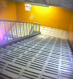

|

| >
新橋駅、横須賀線ホームへの階段、ときどきエスカレーター下るのがヤになんだよね。
>
ドラマ「天体観測」が小雪がゆうさ、「いますぐ会いたい人はいますか」、いるけどケータイは知らないし、メアドも前のは使えなくなってたし、真夏の夜の夢みたく、捉えづらいのに忘れがたい月日で、今になっても、それが時の偶然だったか、自ずからして然かることだったか、僕を喜びに沸かし、哀しみに沈める術において、唯一無二でしたよ、それがコワくて放れたくて、でも少しでも傍にいたかったよ、、四半世紀を生きた日に思ったこと
|
DATE: 02-08-27 20:18
PLACE: 東京都港区
|
|